228 papers · 49 relevant · 5 highlighted
Every paper with at least one nonzero topic score, sorted by best-matching score. 🔥 marks scores ≥4/5. Click the title to jump to the full entry below; click [arXiv] to open the paper page. (secondary) marks papers from de-prioritized cond-mat archives.
analog quantum simulation 5/5 · 🔥 exotic spin models in light-matter 4/5 · 🔥 non-equilibrium dynamics 4/5 · entanglement & information structure 3/5 · QC/QI experiment 2/5 · non-equilibrium universality 2/5 · quantum measurements 2/5free-space correlated emission 5/5 · 🔥 Dicke superradiance 4/5 · 🔥 correlated / nonlocal dissipation 4/5 · methods for driven-dissipative 2/5 · non-equilibrium universality 2/5quantum optics experiment 5/5 · 🔥 QC/QI experiment 4/5 · interference shaping light 3/5 · entanglement & information structure 2/5 · quantum measurements 2/5spintronics-quantum-optics interface 5/5 · 🔥 entanglement & information structure 4/5 · Tavis-Cummings & cavity-many-emitter 2/5 · correlated / nonlocal dissipation 2/5QC/QI experiment 5/5 · 🔥 entanglement & information structure 4/5 · quantum measurements 2/5scars & prethermalization 5/5 · entanglement & information structure 3/5 · non-equilibrium dynamics 3/5measurement-induced transitions 4/5 · 🔥 quantum measurements 4/5 · driven-dissipative phase transition 3/5 · non-equilibrium universality 3/5 · Keldysh / 2PI / non-Gaussian methods 2/5 · entanglement & information structure 2/5 · methods for driven-dissipative 2/5 · non-equilibrium dynamics 2/5correlated cavity matter 4/5 · 🔥 entanglement & information structure 4/5 · Keldysh / 2PI / non-Gaussian methods 3/5 · spintronics-quantum-optics interface 3/5 · Tavis-Cummings & cavity-many-emitter 2/5 · analog quantum simulation 2/5 · correlated / nonlocal dissipation 2/5 · exotic spin models in light-matter 2/5non-equilibrium dynamics 4/5 · Kondo & dissipative impurity 3/5 · analog quantum simulation 3/5 · entanglement & information structure 3/5 · Keldysh / 2PI / non-Gaussian methods 2/5 · non-equilibrium universality 2/5non-equilibrium universality 4/5 · Tavis-Cummings & cavity-many-emitter 3/5 · non-equilibrium dynamics 3/5 · analog quantum simulation 2/5 · correlated cavity matter 2/5 · entanglement & information structure 2/5entanglement & information structure 4/5 · 🔥 non-equilibrium dynamics 4/5 · non-equilibrium universality 3/5 · scars & prethermalization 3/5methods for driven-dissipative 4/5 · driven-dissipative phase transition 3/5 · non-equilibrium dynamics 3/5 · correlated / nonlocal dissipation 2/5 · entanglement & information structure 2/5(secondary) — 🔥 quantum optics experiment 4/5 · correlated cavity matter 3/5 · QC/QI experiment 2/5 · Tavis-Cummings & cavity-many-emitter 2/5 · analog quantum simulation 2/5non-equilibrium dynamics 4/5 · methods for driven-dissipative 3/5 · Keldysh / 2PI / non-Gaussian methods 2/5 · driven-dissipative phase transition 2/5 · non-equilibrium universality 2/5correlated / nonlocal dissipation 4/5 · quantum measurements 3/5 · Tavis-Cummings & cavity-many-emitter 2/5 · entanglement & information structure 2/5 · methods for driven-dissipative 2/5Kondo & dissipative impurity 4/5 · 🔥 methods for driven-dissipative 4/5 · non-equilibrium dynamics 3/5 · Keldysh / 2PI / non-Gaussian methods 2/5non-equilibrium dynamics 4/5 · analog quantum simulation 3/5 · methods for driven-dissipative 3/5 · driven-dissipative phase transition 2/5QC/QI experiment 4/5 · 🔥 quantum optics experiment 4/5 · interference shaping light 2/5 · spintronics-quantum-optics interface 2/5quantum measurements 4/5 · correlated / nonlocal dissipation 2/5 · entanglement & information structure 2/5 · methods for driven-dissipative 2/5 · non-equilibrium dynamics 2/5correlated / nonlocal dissipation 4/5 · methods for driven-dissipative 3/5 · entanglement & information structure 2/5 · non-equilibrium dynamics 2/5non-equilibrium dynamics 4/5 · methods for driven-dissipative 3/5 · driven-dissipative phase transition 2/5 · entanglement & information structure 2/5entanglement & information structure 4/5 · 🔥 non-equilibrium dynamics 4/5 · driven-dissipative phase transition 2/5analog quantum simulation 4/5 · 🔥 non-equilibrium dynamics 4/5 · exotic spin models in light-matter 2/5(secondary) — 🔥 QC/QI experiment 4/5 · 🔥 quantum optics experiment 4/5 · interference shaping light 2/5non-equilibrium dynamics 4/5 · non-equilibrium universality 3/5 · Keldysh / 2PI / non-Gaussian methods 2/5correlated / nonlocal dissipation 4/5 · non-equilibrium dynamics 3/5 · methods for driven-dissipative 2/5entanglement & information structure 4/5 · non-equilibrium dynamics 3/5 · spintronics-quantum-optics interface 2/5quantum measurements 4/5 · methods for driven-dissipative 3/5 · non-equilibrium dynamics 2/5quantum optics experiment 4/5 · QC/QI experiment 3/5 · quantum measurements 2/5QC/QI experiment 4/5 · 🔥 quantum optics experiment 4/5entanglement & information structure 4/5 · methods for driven-dissipative 2/5 · quantum measurements 2/5quantum measurements 4/5 · entanglement & information structure 2/5 · non-equilibrium dynamics 1/5entanglement & information structure 4/5 · non-equilibrium dynamics 2/5QC/QI experiment 4/5 · spintronics-quantum-optics interface 2/5QC/QI experiment 4/5 · methods for driven-dissipative 2/5interference shaping light 4/5 · quantum measurements 2/5entanglement & information structure 4/5 · quantum measurements 2/5quantum measurements 4/5 · methods for driven-dissipative 2/5scars & prethermalization 4/5 · non-equilibrium dynamics 2/5interference shaping light 4/5 · non-equilibrium dynamics 2/5analog quantum simulation 4/5 · non-equilibrium dynamics 2/5QC/QI experiment 4/5 · quantum measurements 1/5QC/QI experiment 4/5 · quantum measurements 1/5methods for driven-dissipative 4/5QC/QI experiment 4/5QC/QI experiment 4/5QC/QI experiment 4/5QC/QI experiment 4/5entanglement & information structure 4/5Papers by authors on your watch list. Click the title to jump to the full entry below; click [arXiv] to open the paper page.
Papers from quant-ph and your primary cond-mat archives (quant-gas, stat-mech, str-el, dis-nn). Highlighted papers (⭐) come first, then everything else sorted by topic-relevance score, highest first.
← Index · ← Previous · Next →
Authors: Huyen Thanh Phan, Katsunori Wakabayashi
Type: theory · Category: other · PDF: https://arxiv.org/pdf/2604.23209v1
Analysis basis: full PDF text, analyzed in chunks
Topic relevance: analog quantum simulation 2/5 · correlated / nonlocal dissipation 2/5 · driven-dissipative phase transition 2/5 · methods for driven-dissipative 2/5 · non-equilibrium dynamics 2/5 · spintronics-quantum-optics interface 2/5
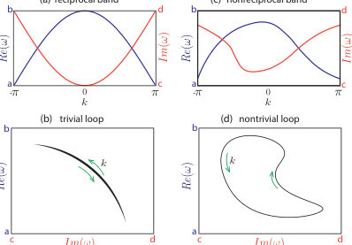
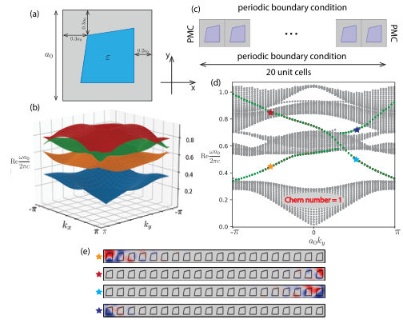
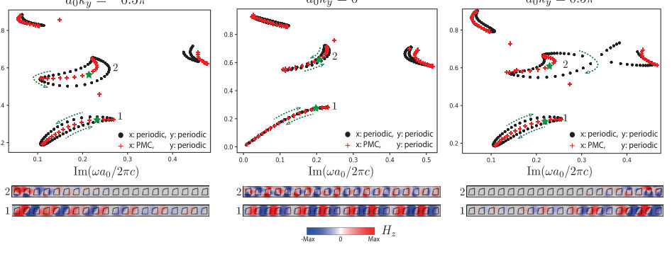
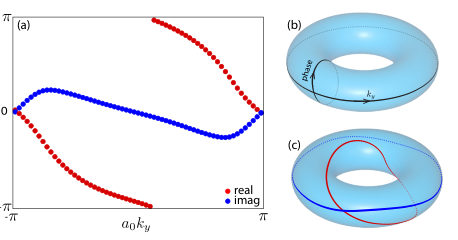
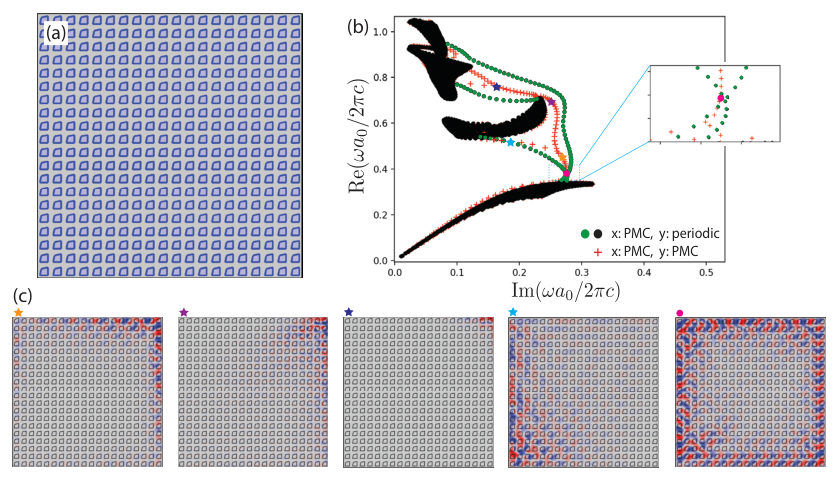
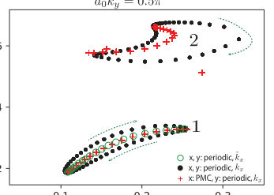
Main problem. Investigating the second-order non-Hermitian skin effect (corner localization) in a continuous 2D photonic crystal, moving beyond traditional tight-binding models.
Main result. Demonstrated that a point gap in the complex eigenfrequency spectrum leads to the emergence of corner skin modes in truncated structures, distinguishing them from Hermitian topological corner states.
Method. Numerical simulations using the Finite Element Method (FEM) and extended plane-wave expansion, combined with non-Bloch band theory and complex Berry phase analysis.
Summary. This paper explores the non-Hermitian corner skin effect in a 2D photonic crystal made of lossy magneto-optical materials. The authors show that point gaps in the complex frequency spectrum cause electromagnetic waves to localize at the corners of finite structures. Unlike traditional topological corner states, these skin modes are driven by non-Hermitian topology and their number scales with the system size. This work is significant because it moves the study of non-Hermitian skin effects from simplified tight-binding models to more realistic, continuous photonic platforms.
Model / system. A 2D non-Hermitian photonic crystal composed of lossy magneto-optical materials arranged in a square unit cell, featuring broken inversion, mirror, and time-reversal symmetries.
Key observables. Complex eigenfrequencies, winding numbers, Chern numbers, and spatial field profiles of edge and corner states.
Important parameters / regimes. Point gaps in the complex spectrum, winding number (w), and the presence of nonreciprocity via the permittivity tensor.
Assumptions / limitations. The lattice constant is fixed at a=1, and the magnetization is assumed to be parallel to the z-direction.
Figures summary. Figure 1 shows 1D vs 2D band structure topology; Figure 2 displays the unit cell, dispersion, and ribbon edge state profiles; Figure 3 shows complex eigenfrequency spectra; Figure 5 illustrates corner skin mode localization and field profiles; Figure 6 compares infinite and ribbon-based complex wave vector dispersions.
Paper structure. The paper introduces the non-Hermitian skin effect, describes the photonic crystal model and its symmetry breaking, presents numerical results for ribbon (edge) and finite (corner) structures, provides topological characterization via winding numbers, and concludes with a comparison to existing models.
Why it may be interesting. The study of non-Hermitian topology and skin effects is highly relevant to open quantum systems and quantum optics, as it provides a realistic continuous-system platform for studying how dissipation and non-reciprocity drive novel localization phenomena.
We numerically study topological effects of electromagnetic (EM) waves in a two-dimensional (2D) non-Hermitian photonic crystal (PhC) composed of lossy magneto-optical materials. In this system, not only the EM wavefunctions but also the complex eigenfrequencies exhibit nontrivial topological properties. We demonstrate that the non-Hermitian skin effect, protected by point gaps in the complex eigenfrequency spectrum, emerges at both the edges and corners of truncated structures. This phenomenon has no counterpart in Hermitian systems. In addition, we identify non-Hermitian topological edge states originating from the nontrivial topology of the bulk bands. While most previous studies of non-Hermitian topology have focused on tight-binding models, our work addresses a continuous photonic system, providing a more realistic platform and offering a concrete route toward experimental realization of non-Hermitian effects.
Authors: Jun Ma
Type: theory · Category: statistical mechanics · PDF: https://arxiv.org/pdf/2604.24387v1
Analysis basis: full PDF text, analyzed in chunks
Topic relevance: methods for driven-dissipative 2/5 · non-equilibrium dynamics 2/5 · quantum measurements 2/5
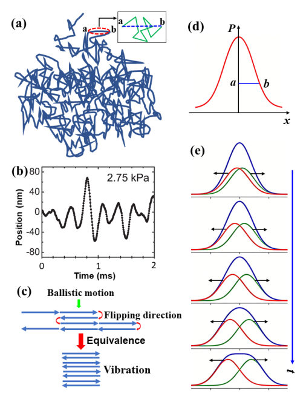
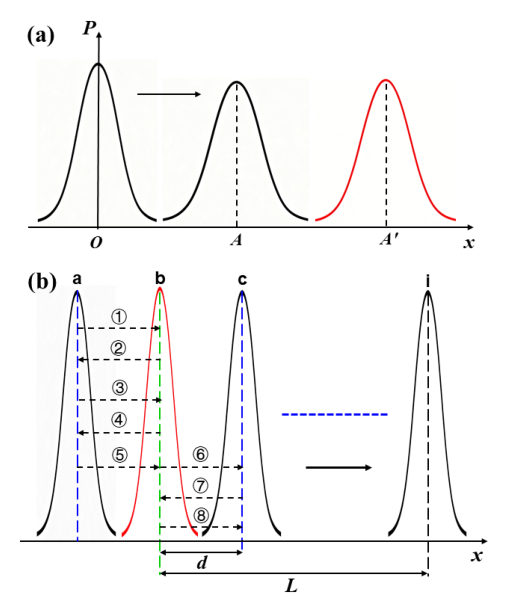
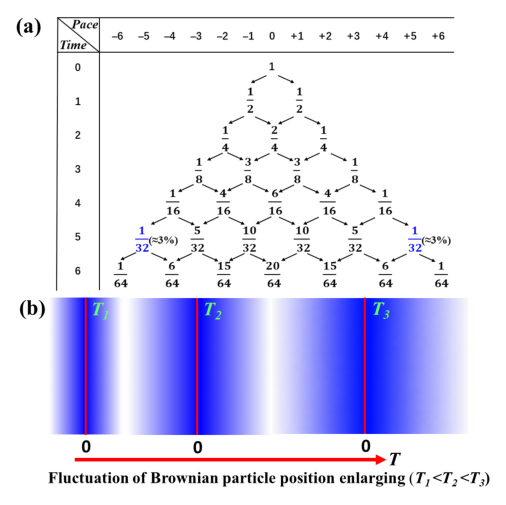
Main problem. The lack of an analytical method to decipher the complex, stochastic 'fingerprint' trajectories of biological and soft matter to extract underlying dynamical information.
Main result. The development of a method that maps the Gaussian probability distribution of Brownian particle displacements onto a propagating wave packet, allowing for the extraction of microscopic dynamical information from irregular trajectories.
Method. A quantization-inspired approach that transforms the probability density of particle displacement into a wave function, using Fourier transforms and Taylor expansions of the angular frequency to relate ballistic motion to wave packet dynamics.
Summary. This paper presents a new analytical method for studying the complex, random motions found in biological and soft matter. By treating the stochastic trajectories of particles like Brownian motion as propagating wave packets, the author can extract hidden dynamical information from seemingly random paths. The method bridges the gap between microscopic ballistic steps and macroscopic diffusion. This approach allows for a systematic study of how spatio-temporal microstructures evolve in complex fluids.
Model / system. A 1D model of a spherical Brownian particle (e.g., proteins, bacteria, or silica beads) undergoing a series of random ballistic motion steps in a fluid, driven by a random thermal field.
Key observables. Mean-squared displacement, probability distribution P(x,t), group velocity (vg), mean displacement, and diffusion constant (D).
Important parameters / regimes. Ballistic step length (l), step time (tb), diffusion exponent (alpha), diffusion constant (D), and effective mass (m*).
Assumptions / limitations. The initial distribution of the wave function is Gaussian, the number of extra steps follows a Gaussian distribution, and the time intervals are integer multiples of the ballistic step time.
Figures summary. Figure 1 shows irregular Brownian trajectories and a 1D model of a silica bead performing ballistic motion with direction flipping. Figure 2 illustrates the wave packet propagation mechanism, showing how oscillating motion and drift lead to net displacement.
Paper structure. The paper introduces the problem of analyzing irregular trajectories, proposes a wave packet quantization model, derives the mathematical framework for the wave function, maps microscopic parameters to macroscopic observables, and concludes with the implications for studying soft matter dynamics.
Why it may be interesting. The paper uses a mathematical analogy between Brownian motion uncertainty and quantum mechanical wave packets, providing a framework for treating stochastic classical trajectories using tools similar to those used in open quantum systems and wave mechanics.
Biological function of living matter is fulfilled by complex motions of biological and soft matter. Unlike general motion is deterministic described by Newton's laws, these motions are mostly random and uncertain for the position in stochastic process, being characterized as irregular trajectories of movement without a defined velocity. Like human fingerprint, the trajectory is the identity of the motion containing fundamental dynamical information. Such irregular trajectories randomly inter-wind and twist to each other to produce a complicated turmoil configuration in which so far the unrealized mechanism of motion is hidden. Nowadays, the analytical method for this fingerprint trajectory is still missed. Here we develop a practicable method to decipher complicated trajectory configuration, which uncovers abundant dynamical information hiding in irregular trajectories, revealing the remarkable evolution of spatial-temporal micro-structure, thus leading to the novel systematic study of the dynamics of biological and soft matter.
Authors: Jiayan Zhang, Gaoyang Li, Gaomin Tang, Yanxia Xing
Type: theory · Category: other · PDF: https://arxiv.org/pdf/2604.23111v1
Analysis basis: full PDF text, analyzed in chunks
Topic relevance: Keldysh / 2PI / non-Gaussian methods 2/5 · non-equilibrium dynamics 2/5
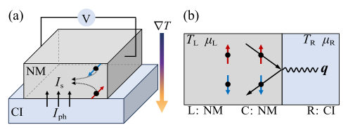
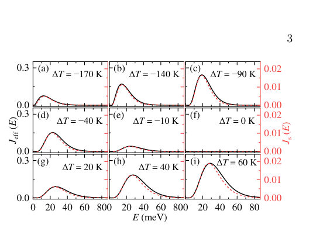
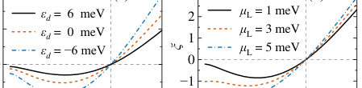
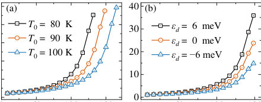
Main problem. Investigating the generation and control of spin currents via the phonon-mediated Spin Seebeck Effect (SSE) in a normal-metal-chiral-insulator heterostructure.
Main result. The study identifies two nonlinear phenomena: negative differential SSE, where increasing thermal bias decreases spin current, and spin-current rectification, which enables a thermally controlled spin diode.
Method. The authors utilize the nonequilibrium Green's function (NEGF) formalism to calculate spin transport and solve for Green's functions and phonon self-energies self-consistently.
Summary. This paper explores how the angular momentum of chiral phonons can be converted into electron spin current in a metal-insulator heterostructure. By using the NEGF formalism, the authors demonstrate that this process can lead to unexpected nonlinear effects like negative differential spin Seebeck effect and spin-current rectification. These findings suggest that such structures could function as thermally controlled spin diodes. The work provides a theoretical foundation for developing new types of phonon-driven spintronic devices.
Model / system. A two-terminal heterostructure consisting of a normal metal (NM) and a chiral insulator (CI), where the central region is modeled as a quantum dot with spin-microrotation coupling between electrons and chiral phonons.
Key observables. Spin current (Is) in the left lead and the rectification ratio (eta).
Important parameters / regimes. Thermal bias (delta T), average temperature (T0), chemical potential (muL), on-site potential (epsilon_d), and phonon coupling strength (alpha).
Assumptions / limitations. The central region is simplified to a quantum dot model to capture essential physics, and the phonon reservoir is modeled using a super-Ohmic spectral density.
Figures summary. Fig 1 shows device schematics for phonon-to-spin conversion; Fig 2 illustrates spin current dependence on thermal bias, chemical potential, and interfacial potential; Fig 3 plots effective spectral and spin current densities; Fig 4 shows the rectification ratio.
Paper structure. The paper introduces the physical mechanism of phonon-mediated SSE, presents the theoretical NEGF framework, analyzes the effects of various parameters (bias, chemical potential, interface), identifies nonlinear transport phenomena, and concludes with implications for spintronic devices.
Phonons can carry angular momentum and exhibit chirality through the circular polarization of atomic motion. This enables a phonon-mediated spin Seebeck effect (SSE) via the conversion of phonon angular momentum into electron spin angular momentum. In this Letter, we develop a theoretical framework for calculating the spin current in a normal-metal (NM)-chiral-insulator (CI) heterostructure within the nonequilibrium Green's function formalism. We discuss the influence of (i) the thermal bias across the NM-CI interface, (ii) the chemical potential of the NM, and (iii) the insertion of an additional interfacial layer, on the spin transport properties. We identify two remarkable nonlinear spin transport phenomena: negative differential SSE and spin-current rectification. The negative differential SSE arises from the competition between the thermal bias and the thermally excited electron density. The spin-current rectification suggests the possibility of realizing a thermally controlled spin diode. We also find that the spin transport behavior is closely associated with an effective interfacial spectral density. This work provides a novel route toward thermally controlled spintronic devices using chiral phonons.
Authors: Sergejs Boroviks, Siarhei Zavatski, Thorsten Feichtner, Jer-Shing Huang, Olivier J. F. Martin, Bert Hecht, N. Asger Mortensen
Type: both · Category: other · PDF: https://arxiv.org/pdf/2604.22988v1
Analysis basis: full PDF text, analyzed in chunks
Topic relevance: quantum optics experiment 2/5 · interference shaping light 1/5
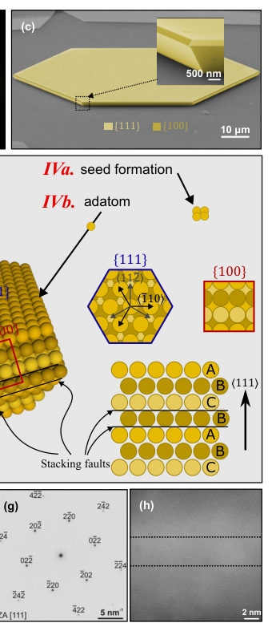
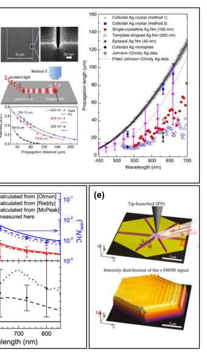
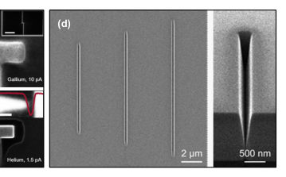
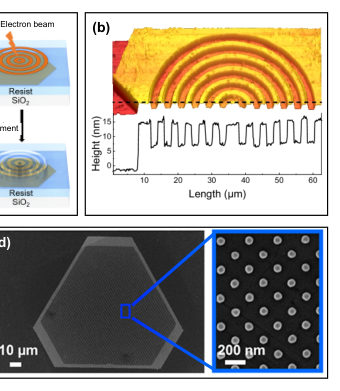
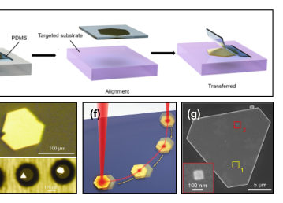
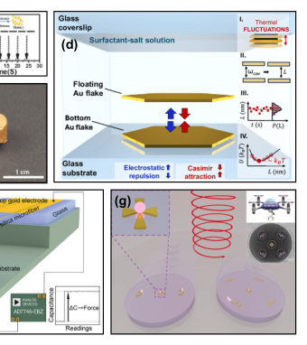
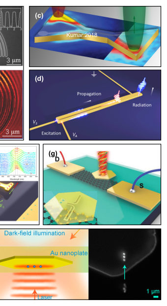
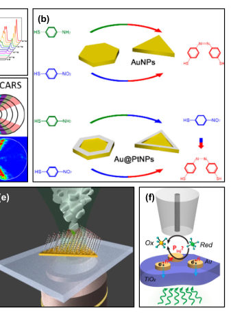
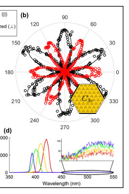
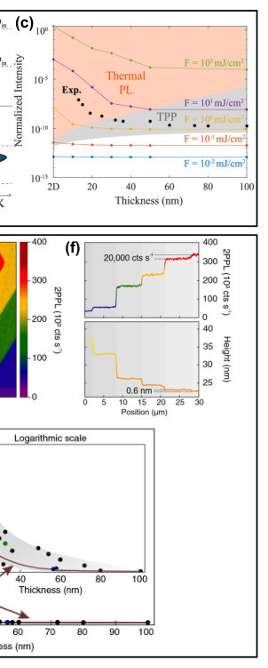
Main problem. Addressing the limitations of conventional polycrystalline metal films, such as high Ohmic losses and surface roughness, by utilizing crystalline metal flakes for advanced plasmonics and hybrid 2D material architectures.
Main result. Crystalline metal flakes provide superior structural definition and reduced scattering, enabling enhanced plasmonic performance, precise nanostructuring via FIB/EBL, and effective integration with 2D materials.
Method. The paper reviews chemical synthesis methods (polyol, Brust-Schiffrin, etc.), nanofabrication techniques (FIB, EBL, etching), and characterization tools (SEM, TEM, SNOM, ellipsometry).
Summary. This review examines the emergence of crystalline metal flakes as a superior alternative to traditional polycrystalline films for nanophotonics. It highlights how their high crystallinity and atomic flatness reduce optical losses and enable precise nanostructuring. The paper covers various chemical synthesis routes, fabrication methods like FIB and EBL, and the integration of these flakes with 2D materials. Ultimately, it positions these flakes as essential platforms for advanced applications in sensing, optoelectronics, and quantum plasmonics.
Model / system. The primary system consists of quasi-monocrystalline noble metal flakes (Au, Ag, Al, Cu) characterized by atomically flat surfaces, well-defined {111} facets, and stacking faults.
Key observables. Surface Plasmon Polariton (SPP) propagation length, complex permittivity, surface roughness, aspect ratio, and nonlinear optical responses.
Important parameters / regimes. Thickness (from ~1.9 nm to >1 um), lateral size (up to ~250 um), and crystal facets ({111} vs {100}).
Assumptions / limitations. The flakes are treated as quasi-monocrystals due to the presence of twin planes/stacking faults required for anisotropic growth.
Figures summary. Fig 1: Morphology and crystal structure of Au flakes; Fig 2: Linear optical properties and SPP propagation; Fig 3: Comparison of Ga-FIB vs He-FIB milling quality; Fig 4: EBL fabrication flow and patterned nanostructures; Fig 5: Examples of micromanipulation techniques.
Paper structure. The review begins by contrasting polycrystalline vs. crystalline films, moves to the structural and chemical synthesis of flakes, discusses fabrication and nanostructuring techniques, explores integration with 2D materials, and concludes with future prospects.
Why it may be interesting. The paper is highly relevant to quantum optics and nanophotonics due to its discussion on quantum plasmonics, nonclassical light generation, and the manipulation of light-matter interactions in hybrid architectures.
Crystalline noble metal flakes are emerging as versatile platforms in nanophotonics, enabling a broad range of optical phenomena and applications. Their atomically flat surfaces, high crystallinity, and superior optical quality open new avenues in advanced plasmonics, quantum light generation, and hybrid photonic systems. In contrast to conventional polycrystalline metal films, which typically suffer from higher optical losses due to grain boundaries, surface roughness, and structural disorder, these monocrystalline flakes provide minimal scattering and enhanced performance. They serve as templates for precise nanostructuring through techniques like focused-ion beam (FIB) milling and are crucial for advanced applications in sensing and optoelectronics. Additionally, they facilitate frontier research in quantum plasmonics, enabling fundamental studies of nonlocal optical effects and the generation of nonclassical light. Furthermore, the well-defined $\{111\}$ facets of these flakes host Tamm--Shockley surface states that support 2D plasmons coexisting with bulk modes. At near-infrared wavelengths and beyond, crystalline flakes act as nearly ideal metallic mirrors, featuring surface roughness limited only to atomic terrace steps, making them highly suitable for integration with 2D materials in hybrid photonic architectures. This review surveys the key roles these flakes play, highlighting recent developments and discussing future prospects while emphasizing their unique benefits in addressing fundamental and applied challenges in modern nanophotonics.
Authors: William Ratcliff
Type: both · Category: disordered systems and neural networks · PDF: https://arxiv.org/pdf/2604.23821v1
Analysis basis: full PDF text, analyzed in chunks
Topic relevance: spintronics-quantum-optics interface 2/5
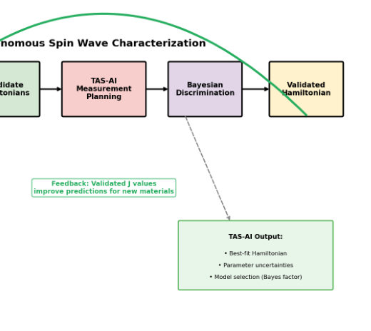
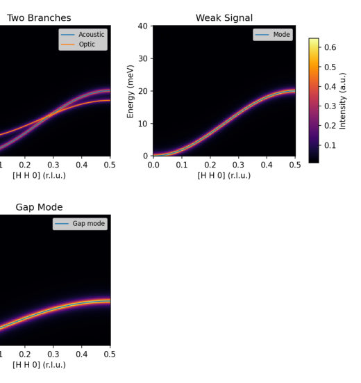
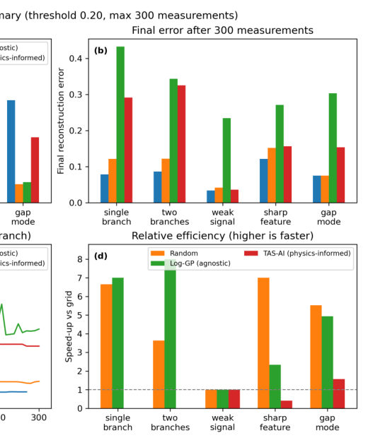
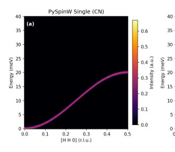
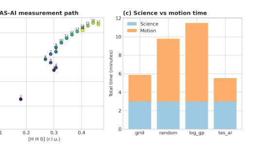
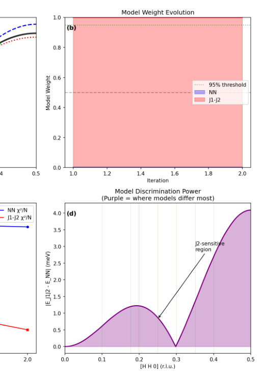
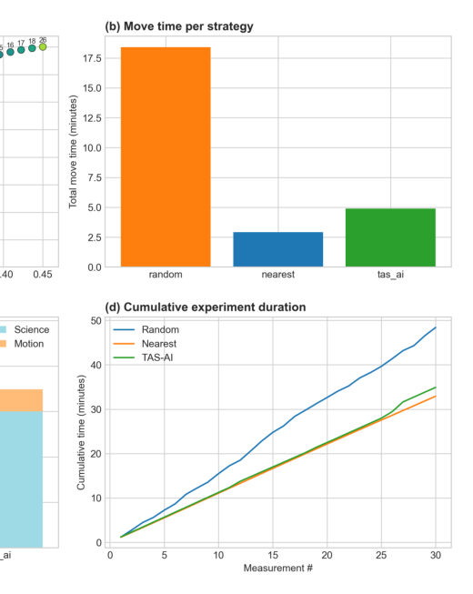
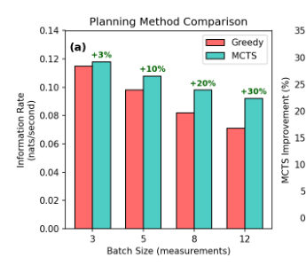
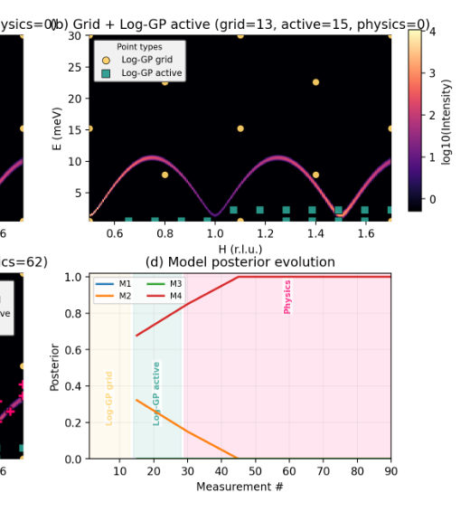
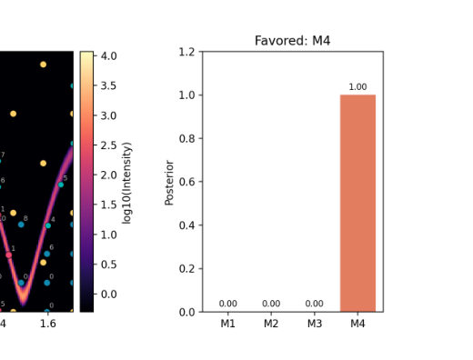
Main problem. The challenge of automating neutron spectroscopy, specifically balancing the tasks of signal detection, Hamiltonian inference, and parameter refinement while avoiding 'algorithmic myopia' where a controller over-refines an incorrect model.
Main result. The TAS-AI framework successfully uses a hybrid agnostic-to-physics-informed workflow to accelerate characterization, reducing wall-clock time by 32% and using an LLM-based audit layer to prevent model lock-in.
Method. A hybrid active learning framework (TAS-AI) combining Log-Gaussian Process mapping for discovery, physics-informed planning for refinement, and an LLM-based 'audit committee' for strategic falsification.
Summary. This paper presents TAS-AI, an autonomous framework designed to accelerate the characterization of quantum materials via neutron spectroscopy. It addresses the inefficiency of using a single controller for all experimental tasks by proposing a hybrid approach: model-agnostic methods for initial signal discovery and physics-informed methods for parameter refinement. The authors also introduce an LLM-based audit layer to prevent the system from getting stuck on incorrect physical models. The framework demonstrates significant reductions in experimental wall-clock time and improved robustness in model selection.
Model / system. The study uses a high-fidelity digital twin of a Triple-Axis Spectrometer (TAS) to simulate spin-wave spectroscopy on square-lattice magnetic systems, including ferromagnetic and antiferromagnetic Hamiltonians with J1-J1 and anisotropy parameters.
Key observables. Momentum-energy coordinates (Q, E), intensity (I), uncertainty (sigma), and AIC-derived evidence ratios for model selection.
Important parameters / regimes. Exchange constants (J1, J2), anisotropy (D), motor speeds (v_H, v_E), and counting time (t).
Assumptions / limitations. The framework relies on fast Laplace/Levenberg-Marquardt approximations for real-time decision-making and assumes the use of a digital twin for validation.
Figures summary. Figure 1 illustrates the TAS-AI workflow stages; Figure S1 shows the effect of energy tapering on edge-locking; Figure 9 shows the transition between controller phases.
Paper structure. The paper introduces the TAS-AI framework, details the three-stage hybrid workflow (agnostic discovery, physics-informed refinement, and strategic audit), presents benchmarks on model discrimination and parameter accuracy, discusses the mitigation of algorithmic myopia via LLMs, and concludes with software implementation details.
Autonomous neutron spectroscopy must solve three distinct tasks: detection (where is the signal?), inference (which Hamiltonian governs it?), and refinement (what are the parameters?). No single controller solves all three equally well. We present TAS-AI, a hybrid agnostic-to-physics-informed framework for autonomous triple-axis spin-wave spectroscopy that separates these tasks explicitly. In blind reconstruction benchmarks, model-agnostic methods such as random sampling, coarse grids, and Gaussian-process mappers reach a global error threshold more reliably and with fewer measurements than physics-informed planning, supporting the claim that discovery and inference are distinct tasks requiring distinct controllers. Once signal structure is localized, the physics-informed stage performs in-loop Hamiltonian discrimination and parameter refinement: in a controlled square-lattice test between nearest-neighbor-only and J1-J2 Hamiltonians, TAS-AI reaches a decisive AIC-derived evidence ratio (>100) in fewer than 10 measurements, while motion-aware scheduling cuts wall-clock time by 32% at a fixed measurement budget. We also identify a failure mode of posterior-weighted design, algorithmic myopia, in which the planner over-refines the current leading model while under-sampling low-intensity falsification probes. A constrained falsification channel sharply reduces time spent committed to the wrong model and accelerates correct model selection without modifying the Bayesian inference engine. In controlled two-model ablations, both a deterministic top-two max-disagreement rule and an LLM-based audit committee achieve this gain under identical constraints. We demonstrate the full workflow in silico using a high-fidelity digital twin and provide an open-source Python implementation.
Authors: Elina Kokurina, Dmitry Vagin, Eduardo Barredo-Alamilla, Maxim A. Gorlach
Type: theory · Category: strongly correlated electrons · PDF: https://arxiv.org/pdf/2604.23186v1
Analysis basis: full PDF text, analyzed in chunks
Topic relevance: spintronics-quantum-optics interface 2/5
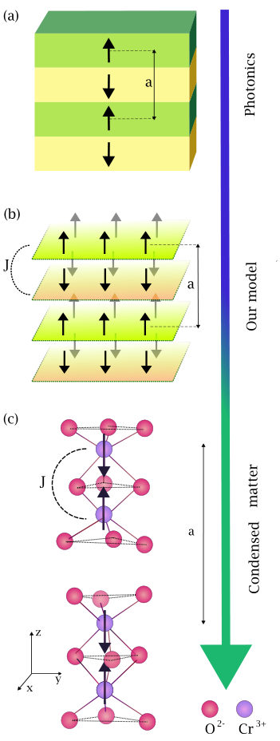
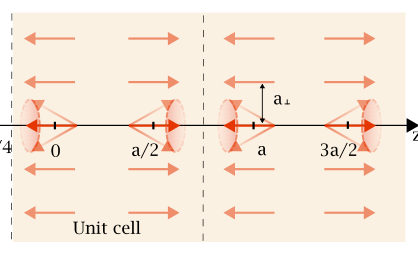
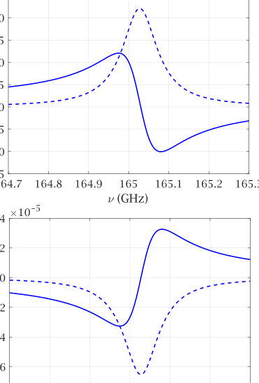
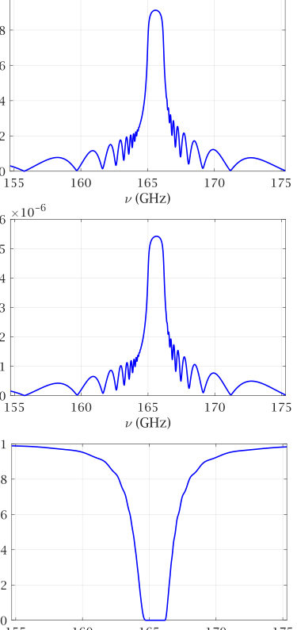
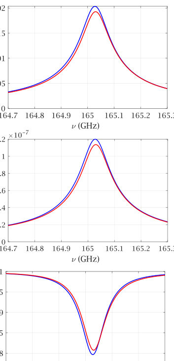
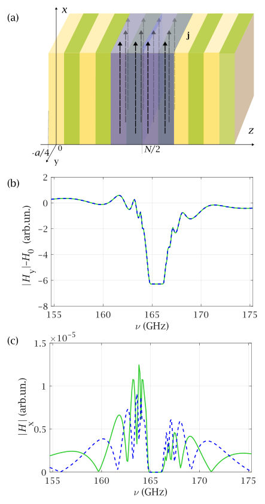
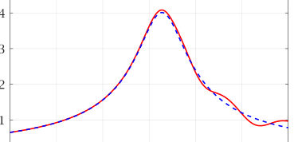
Main problem. Investigating whether the recently predicted dual axion response, a nonreciprocal magneto-electric effect involving magnetic charge, can emerge in condensed matter systems like antiferromagnets rather than just in engineered metamaterials.
Main result. The authors prove that a periodic antiferromagnetic spin lattice exhibits an emergent dual axion response, which can be distinguished from the conventional axion response by analyzing the frequency dependence of polarization rotation from an internal current source.
Method. The study uses linear response theory, the semi-classical Landau-Lifshitz-Gilbert (LLG) equation, and the Discrete Dipole Approximation (DDA) for numerical validation, alongside an effective medium approach.
Summary. This paper investigates the emergence of a 'dual axion response' in condensed matter systems, specifically antiferromagnetic spin lattices. While previously predicted for metamaterials, the authors demonstrate that realistic materials like Cr2O3 can host this effect. They show that while standard scattering experiments cannot distinguish between conventional and dual axion responses, internal excitation probes can. This work proposes a new way to identify nonreciprocal magneto-electric coupling in solids.
Model / system. A periodic antiferromagnetic spin lattice (e.g., Cr2O3 or MnBi2Te4) with Heisenberg-type exchange coupling, magnetic anisotropy, and dipole-dipole interactions.
Key observables. Axion coefficients (chi and dual axion chi-tilde), effective permeability, reflection and transmission coefficients (r_xy, t_xy), and polarization rotation (Ey/Ex).
Important parameters / regimes. Lattice period-to-wavelength ratio (xi), magnon resonance frequency, exchange constants (J, J_perp), and anisotropy (K).
Assumptions / limitations. Effective medium limit (subwavelength regime), linearized spin dynamics, neglect of spatial dispersion, and neglect of transverse exchange coupling.
Figures summary. Figure 1 compares metamaterials to spin lattices; Figure 2/3 show the lattice geometry and calculated material parameters for Cr2O3; Figure 4/5/6/7 show reflection/transmission properties and the diagnostic comparison between axion and dual axion models using simulated current sources.
Paper structure. The paper establishes a hierarchy from metamaterials to spin lattices, derives effective electromagnetic properties from the LLG equation, validates the dual axion emergence via numerical simulations, and provides a diagnostic recipe for experimental identification.
Why it may be interesting. The discovery of a dual axion response in natural solids suggests a new topological phase or invariant in condensed matter and provides a method to probe broken symmetries using internal radiation sources.
Recently, it was predicted that nonreciprocal magneto-electric effect in antiferromagnetic multilayered metamaterials occurs in two distinct versions. One is the conventional axion response, while another one is dual axion response captured by electrodynamics with magnetic charge. Here we investigate a model condensed matter system of spins coupled through antiferromagnetic exchange interaction and derive its effective electromagnetic properties. We predict that this system gives rise to the emergent dual axion field, support our conclusion by numerical simulations and put forward candidate materials.
Authors: Danny E. P. Vanpoucke
Type: theory · Category: quantum information and computing · PDF: https://arxiv.org/pdf/2604.23715v1
Analysis basis: full PDF text, analyzed in chunks
Topic relevance: spintronics-quantum-optics interface 2/5
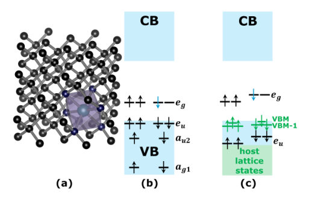
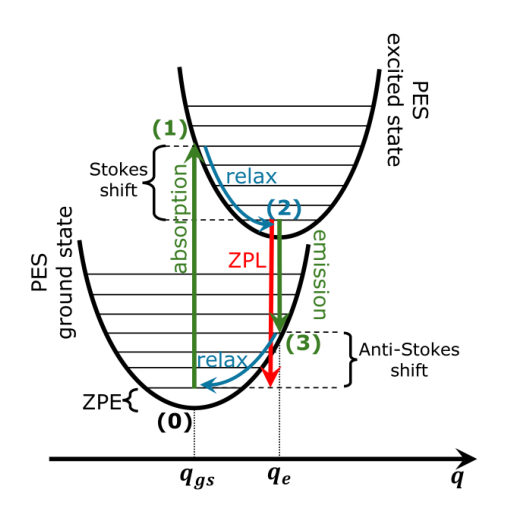
Main problem. Predicting the Zero-Phonon Line (ZPL) position and pressure coefficient of SnV color centers in diamond while evaluating the trade-off between computational accuracy and cost.
Main result. The SnV0 ZPL is predicted to be redshifted by ~43 nm relative to SnV-, and the pressure coefficient is found to be a robust observable at approximately 1.4 nm/GPa across different methods.
Method. First-principles Density Functional Theory (DFT) using PBE and HSE06 functionals, comparing the delta-KS and Franck-Condon approximations.
Summary. This paper investigates the optical properties of SnV color centers in diamond using first-principles calculations. It compares different DFT functionals and approximations to determine the accuracy of predicting the Zero-Phonon Line and its response to pressure. The study finds that while absolute ZPL positions are sensitive to the chosen method, the relative shift between charge states and the pressure coefficient are robust. These findings are crucial for the development of SnV-based quantum photonic devices.
Model / system. Tin-Vacancy (SnV) color centers in diamond, specifically the neutral (SnV0) and negative (SnV-) charge states, modeled using large supercells (512 and 1000 atoms) to simulate dilute limits.
Key observables. Zero-Phonon Line (ZPL) position (nm/eV), pressure coefficient (nm/GPa), and Hirshfeld-I atomic charges.
Important parameters / regimes. Supercell size (0.195% and 0.100% concentrations), charge states (SnV0, SnV-), and hydrostatic strain levels (+/- 1%, +/- 2%).
Assumptions / limitations. The use of the delta-KS approximation assumes vertical excitations, while the Franck-Condon model assumes structural relaxation; absolute ZPL accuracy is limited by the inherent precision of DFT functionals.
Figures summary. Figure 1 shows the SnV local environment, symmetry-based energy level diagrams, and the positioning of Kohn-Sham states relative to the valence band.
Paper structure. The paper introduces the SnV system, details the DFT methodology and functional comparisons, presents results for ZPL positions and pressure coefficients, and concludes with a discussion on computational efficiency and accuracy.
Why it may be interesting. This work is highly relevant for quantum photonics and quantum information, as it provides essential spectroscopic parameters (ZPL and strain response) for SnV centers, which are promising candidates for scalable quantum networks.
Among the group-IV vacancy color centers in diamond, the SnV holds promise for photonics based quantum applications. In this work, the Tin-Vacancy (SnV) zero-phonon line (ZPL) and its pressure coefficient are calculated using first principles approaches. The predicted absolute ZPL position is shown to be strongly influenced by the method and supercell size used. The results are therefore extrapolated to the dilute limit allowing for direct comparison with experiments. The importance of identifying the color-center related Kohn--Sham states is highlighted, as well as the shifting of these states due to electron excitations as well as supercell size and k-point position. In contrast to the absolute ZPL positions, the relative position of the SnV$^0$ ZPL is consistently redshifted about $43$ nm compared to the SnV$^-$ ZPL. In addition, the pressure coefficient is shown to be very robust over different methods, always resulting in a value of about $1.4$ nm/GPa, for both SnV$^0$ and SnV$^-$. Finally, the computational accuracy and cost are put into perspective.
Authors: Baichen Lin, Shanquan Chen, Yubo Zhang, Yangyang Si, Haoliang Huang, Chuanrui Huo, Frans Munnik, Yongqi Dong, Lu You, Jian Shao, Yu-Chieh Ku, Nguyen Nhat Quyen, Aryan Keshri, Zhenlin Luo, Weiwei Zhao, Chun-Fu Chang, Chih-Wei Luo, Sujit Das, Shiqing Deng, Chang-Yang Kuo, Zuhuang Chen
Type: both · Category: strongly correlated electrons · PDF: https://arxiv.org/pdf/2604.24240v1
Analysis basis: full PDF text, analyzed in chunks
Topic relevance: non-equilibrium dynamics 2/5
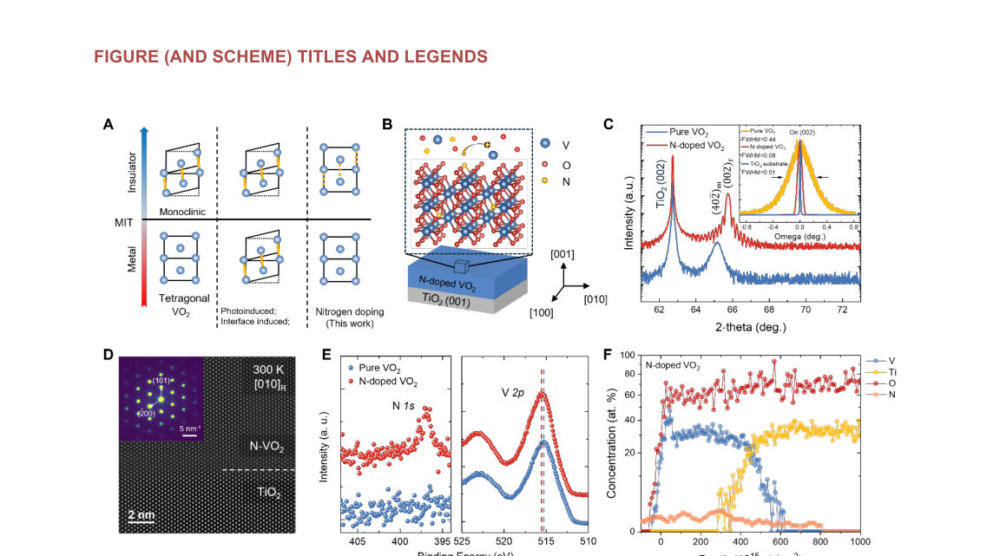
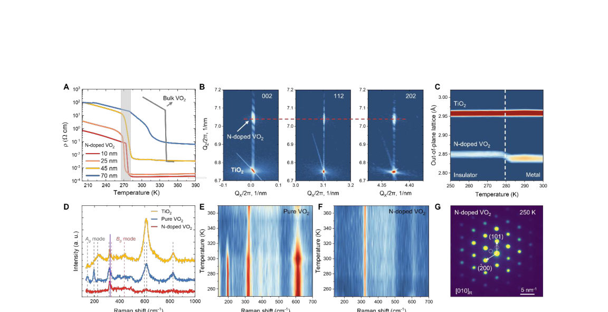
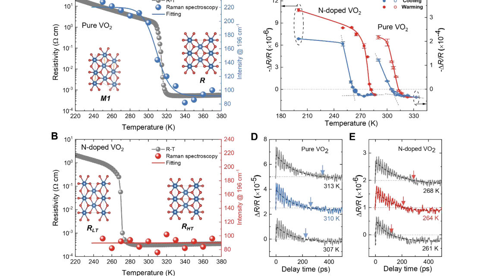
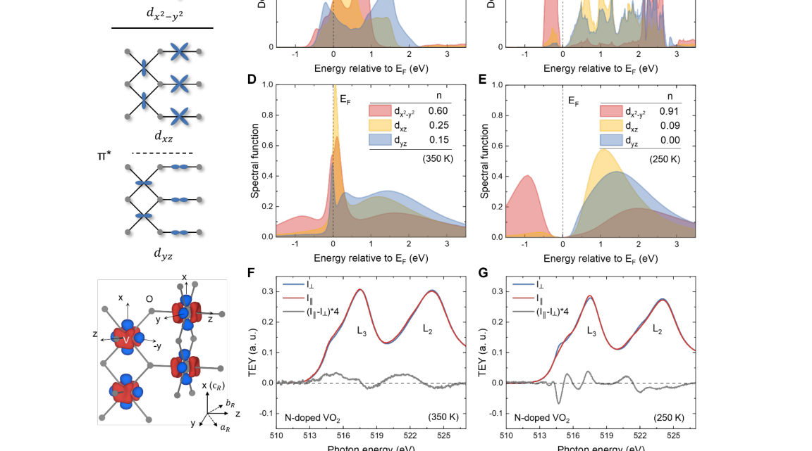
Main problem. The metal-insulator transition (MIT) in VO2 is typically coupled to a symmetry-lowering structural phase transition, which limits the switching speed and endurance of Mottronic devices. The study aims to achieve an iso-symmetric MIT where the electronic transition occurs without changing the crystal symmetry.
Main result. Nitrogen doping in VO2 thin films suppresses V-V dimerization, enabling an iso-symmetric, tetragonal-to-tetragonal MIT driven by a Mott mechanism. This transition exhibits faster switching kinetics compared to undoped VO2.
Method. The researchers used reactive pulsed laser deposition (PLD) for nitrogen doping, combined with structural characterization (XRD, STEM, Raman), chemical analysis (XPS, ERDA), and ultrafast time-resolved optical reflectivity. Theoretical validation was performed using DFT (r2SCAN) and DFT+DMFT.
Summary. This paper reports the successful engineering of an iso-symmetric metal-insulator transition in VO2 thin films through nitrogen doping. By substituting nitrogen into oxygen sites, the researchers suppressed the structural dimerization that usually accompanies the transition, maintaining tetragonal symmetry throughout. This approach results in faster electronic switching speeds and provides evidence for a Mott-driven, rather than Peierls-driven, transition. These findings are significant for developing high-performance, high-speed electronic and photonic 'Mottronic' devices.
Model / system. Epitaxial VO2 thin films grown on (001) TiO2 substrates, where nitrogen ions (N3-) substitutionally replace oxygen (O2-) sites to induce p-type carrier density.
Key observables. Transition temperature (T_MIT), lattice parameters, carrier density, V-V dimerization, transient reflectivity (delta R/R), and orbital occupation (d_parallel and pi* bands).
Important parameters / regimes. Nitrogen doping concentration (~1%), transition temperature (~280 K), switching time (~207 ps for N-doped vs ~264 ps for pure VO2), and bandgap (~0.89 eV).
Assumptions / limitations. The study assumes the nitrogen is incorporated substitutionally at oxygen sites without significant interstitial presence or oxygen vacancies.
Figures summary. Figure 1 shows the fabrication strategy, N-doping schematic, and evidence of film quality via XRD and STEM. Figure 2 presents electrical resistivity, RSM, and Raman spectroscopy showing symmetry preservation. Figure 3 compares ultrafast transient reflectivity spectra and decay times.
Paper structure. The paper begins with the fabrication strategy and structural verification of N-doped VO2, moves to characterizing the electrical and structural properties of the phase transition, presents ultrafast dynamics of the switching process, and concludes with theoretical modeling (DFT/DMFT) of the orbital-driven Mott mechanism.
Why it may be interesting. The paper demonstrates a way to decouple electronic and structural phase transitions using chemical doping, providing a playground for studying pure Mott physics and orbital-driven transitions in a controlled, high-speed manner.
Metal-insulator transitions (MITs) in correlated oxides offer immense potential for next-generation Mottronic devices. However, their integration into practical applications is often hindered by the coupling of MITs with symmetry-lowering structural phase transitions, which limits switching speed and endurance. In this study, we engineered an iso-symmetric MIT on average in epitaxial rutile VO2 thin films via an in-situ nitrogen doping strategy. Nitrogen incorporation effectively suppresses V-V dimerization, enabling an iso-symmetric MIT, while preserving the original crystal symmetry. Furthermore, in-operando time-resolved optical reflectivity measurements revealed a shortened switching time in nitrogen-doped films, highlighting their enhanced performance. Our findings provide critical insights into the underlying mechanisms of MITs and introduce anion doping as a powerful tool for tailoring phase transitions in strongly correlated electron systems. This approach opens new avenues for the development of high-performance electronic and photonic devices.
Authors: Ida Juliane Bundgaard, Catarina G. Ferreira, Yonas Lebsir, Christos Tserkezis
Type: theory · Category: other · PDF: https://arxiv.org/pdf/2604.24411v1
Analysis basis: full PDF text, analyzed in chunks
Topic relevance: interference shaping light 2/5
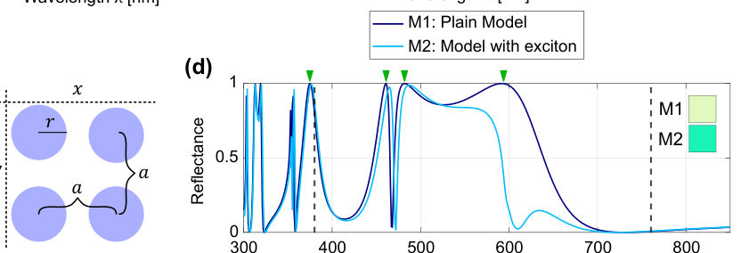
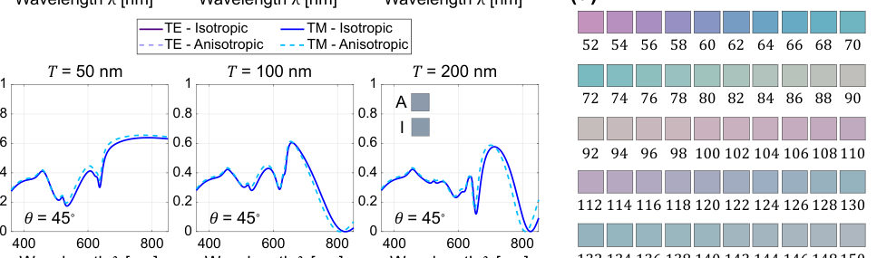
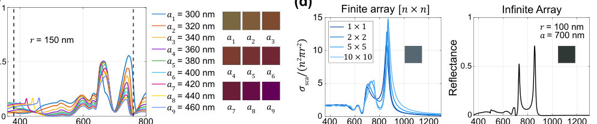
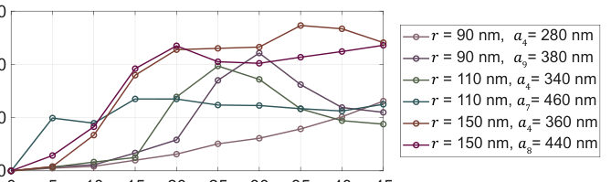
Main problem. Investigating the potential of Transition Metal Dichalcogenide (TMD) nanostructures, specifically nanoparticle arrays, as a platform for generating tunable structural colours.
Main result. TMD nanosphere arrays can achieve a wide range of colours by tailoring particle radius and lattice separation, with expanded colour space coverage possible through different TMD materials and bipartite array configurations.
Method. Semi-analytical calculations using the T-matrix approach, Mie theory, and lattice sums, combined with colorimetric analysis (CIE XYZ/Lab) to evaluate perceived colour.
Summary. This paper explores how TMD nanostructures can be engineered to produce a wide variety of structural colours. By adjusting the size and arrangement of TMD nanoparticles, researchers can manipulate Mie resonances and lattice modes to cover a large portion of the visible RGB spectrum. The study also highlights how material-specific features, like excitonic transitions, can be used to further tune the optical response. This work provides a roadmap for designing highly tunable, nanostructured optical surfaces.
Model / system. Arrays of spherical TMD nanoparticles (such as WS2, MoS2, and HfSe2) in square and bipartite lattices, as well as thin anisotropic TMD slabs.
Key observables. Reflectance spectra, scattering and absorption cross-sections, CIE XYZ tristimulus values, and color difference (Delta E_Lab).
Important parameters / regimes. Particle radius (30-150 nm), lattice constant (up to 800 nm), incidence angle, material type, and slab thickness.
Assumptions / limitations. Nanoparticles are treated as isotropic for small structures; relative permeability is assumed to be unity; spherical geometries are used as a first approximation for more complex morphologies.
Figures summary. Figure 1 shows permittivity and cross-sections for different models; Figure 3 displays reflectance spectra and colours for various radii and lattice constants; Figure 4 shows angular dependence; Figure 5 compares different array configurations; Figure 6 presents CIE colour space plots showing coverage expansion.
Paper structure. The paper introduces the concept of TMD-based structural colours, details the electromagnetic modeling and colorimetric methods, analyzes the impact of particle geometry and material properties (including excitons and anisotropy), explores array configurations for maximizing colour gamut, and concludes with potential extensions.
We introduce transition metal-dichalcogenide (TMD) nanostructures as a promising platform for the realisation of structural colours. Processing of semianalytically calculated reflectance spectra of TMD nanosphere arrays shows a wide range of colours, which are obtained simply through tailoring the radius and separation of spheres in the array, with the size-dependent Mie modes of the nanoparticles being the primary contributor to the spectra. Additionally, it is demonstrated that further coverage of the colour space can be obtained by employing different materials or different lattice unit cells. Theoretical examination of the impact of the excitonic attributes of TMDs on the resulting structural colours indicates that self-hybridisation between nanoparticle modes and excitonic transitions may be employed for further tuneability. Moreover, the impact of TMD anisotropy on the structural colours is shown to be negligible for small structures at typical viewing angles, while the viewing angle itself may impact the colour. This work sets out to be a general investigation of TMD nanoarchitectures, with a focus on nanosphere arrays, for structural colours, by examining both inherent material features through the lens of colourimetry, and the ability of such structures to sustain a broad range of hues.
Authors: Eyal Uzner, Ofer Neufeld
Type: theory · Category: other · PDF: https://arxiv.org/pdf/2604.23506v1
Analysis basis: full PDF text, analyzed in chunks
Topic relevance: non-equilibrium dynamics 2/5
Main problem. Investigating how interlayer coupling affects high harmonic generation (HHG) in layered solids, specifically addressing the gap where out-of-plane hopping is often neglected.
Main result. The authors show that interlayer coupling can significantly alter HHG angular and ellipticity dependence and develop an analytic theory showing HHG yields follow a 4th-order polynomial in the coupling parameter.
Method. Numerical solutions of the Semiconductor Bloch Equations (SBE) in the Houston basis and length gauge, combined with an analytic perturbative expansion of the laser-driven current.
Summary. This paper explores how the vertical coupling between layers in materials like graphite and hBN influences high harmonic generation. The authors demonstrate that even when a laser is polarized in-plane, the out-of-plane hopping can change the direction and shape of the emitted harmonics. They provide a new mathematical framework using a 4th-order polynomial to accurately predict these changes. This work suggests that HHG can be used as a powerful spectroscopic tool to measure interlayer interactions and potentially control ultrafast electron dynamics.
Model / system. A 4-band tight-binding model for AB-stacked honeycomb lattices, applied to materials including graphite, hexagonal boron nitride (hBN), and WS2, including interlayer hopping along the c-axis.
Key observables. HHG emission spectrum, time-dependent electric current, angular dependence of harmonics, and ellipticity dependence of harmonics.
Important parameters / regimes. Interlayer coupling strength (tz), laser polarization angle (theta), laser ellipticity (epsilon), and dephasing time (T2).
Assumptions / limitations. The interlayer hopping is treated as a perturbation; the model uses a phenomenological dephasing time; the laser is assumed to be off-resonant and femtosecond-scale.
Figures summary. Fig 1: Lattice geometry, Brillouin zone, and band structures. Fig 2: HHG yields vs. orientation for graphite and hBN. Fig 3: HHG yields vs. ellipticity. Fig 4: Dependence of HHG yield on the interlayer hopping parameter with comparison of power-law and 4th-order polynomial fits.
Paper structure. Introduction of the problem of interlayer coupling, description of the tight-binding model and SBE method, presentation of the analytic perturbative theory, numerical validation via HHG spectra and angular/ellipticity dependence, and discussion of implications for spectroscopy and control.
High harmonic generation (HHG) in solids has recently emerged as a powerful all-optical approach for probing material properties and ultrafast electron dynamics in quantum systems. It has been widely applied for studying two-dimensional and layered solids of various kinds. In these studies, the laser is usually polarized within the layered planes, where most electron dynamics occurs, while out-of-plane hopping is commonly neglected. This is despite of interlayer hopping being ubiquitous in nano-systems. Here we develop theory for HHG in layered solids in presence of interlayer coupling and employ it for studying strong-field driven hexagonal BN, graphite, and the transition metal dichalcogenide WS$_2$. We show that sufficiently intense couplings can alter typical HHG emission characteristics such as angular or ellipticity dependence even when the driving laser is polarized in-plane. We develop an analytic perturbation theory for the laser-driven current expanded in the interlayer coupling parameter and explicitly show that HHG yields follow a 4'th order polynomial form, which is validated numerically. Our work should motivate experiments for probing interlayer coupling via HHG spectroscopy, as well as exploring its modulation as a control parameter for ultrafast dynamics and attopulse generation via laser driving and mechanical strain.
Authors: Hyunsoo Kim, Makariy A. Tanatar, Cedomir Petrovic, Ruslan Prozorov
Type: experiment · Category: strongly correlated electrons · PDF: https://arxiv.org/pdf/2604.23657v1
Analysis basis: full PDF text, analyzed in chunks
Topic relevance: Kondo & dissipative impurity 1/5
Main problem. Investigating the superconducting pairing symmetry and vortex lattice properties of the heavy fermion superconductor CeCoIn5 by measuring the Campbell penetration depth.
Main result. The measured Campbell penetration depth deviates from conventional sqrt(H) behavior, signaling a vortex lattice symmetry change, and the critical current density Jc(T) shows a nearly T-linear dependence, providing new evidence for unconventional superconductivity.
Method. Frequency-domain tunnel diode resonator (TDR) technique used to measure temperature and magnetic field dependent magnetic penetration depth.
Summary. This paper uses the tunnel diode resonator technique to study the Campbell penetration depth in the heavy fermion superconductor CeCoIn5. The researchers found that the magnetic field dependence of the Campbell depth deviates from standard models, which they interpret as a change in the symmetry of the vortex lattice. Additionally, they discovered that the critical current density follows a T-linear dependence, which is highly unusual for conventional superconductors. These findings provide significant new evidence for the unconventional nature of superconductivity in this material.
Model / system. Single crystals of the heavy fermion superconductor CeCoIn5 in the clean limit, using a single-vortex pinning model with a quadratic pinning potential.
Key observables. Magnetic penetration depth (lambda_m), Campbell penetration depth (lambda_C), London penetration depth (lambda_L), and critical current density (Jc).
Important parameters / regimes. Temperature range 0.15 K to 2.5 K, magnetic fields up to 5 T, coherence length xi(0) = 24 nm, and London penetration depth lambda_L(0) approx 260 nm.
Assumptions / limitations. The pinning potential radius rp is assumed to be the coherence length xi, and the system is assumed to be in the clean limit.
Figures summary. Fig 1 shows temperature-dependent penetration depth, its derivative, and the resulting H-T phase diagram; Fig 4 compares the temperature dependence of Jc in CeCoIn5 to other superconductors like LiFeAs and SrPd2Ge2.
Paper structure. The paper introduces the scientific problem of CeCoIn5 symmetry, describes the TDR experimental setup and sample preparation, presents measurements of lambda_m and lambda_C, analyzes the vortex lattice symmetry changes and Jc temperature dependence, and concludes with a comparison to other superconducting systems.
The temperature and magnetic field dependent magnetic penetration depth, $λ_m(T,H)$, was measured in a single crystal of a heavy fermion superconductor CeCoIn$_5$ using a frequency-domain tunnel diode resonator. In addition to the London penetration depth, which yields the superfluid density, measurements in a finite DC magnetic field provide Campbell penetration depth, $λ_C(T,H)$, which is directly linked to the true (unrelaxed) critical current density, $J_c$. The measured $λ_C(H)$ in CeCoIn$_5$ deviates significantly from the conventional $\sim \sqrt{H}$ behavior, and its slope changes abruptly at the characteristic magnetic field values. Considering that our sample is in the clean limit, we interpret this deviation as a fingerprint of the vortex lattice symmetry change. The temperature dependence $J_c(T)$ of CeCoIn$_5$ calculated from $λ_C(T)$ is nearly $T$-linear over the entire temperature range, also in stark contrast to expectations in a conventional type-II superconductor. Our results provide new evidence for unconventional superconductivity in CeCoIn$_5$ from the never-before-measured Campbell penetration depth.
Authors: Maria Barbara Maccioni, Elia Stocco, Luca Binci, Andrea Floris, Matteo Cococcioni
Type: theory · Category: strongly correlated electrons · PDF: https://arxiv.org/pdf/2604.23565v1
Analysis basis: full PDF text, analyzed in chunks
Topic relevance: spintronics-quantum-optics interface 1/5
Main problem. The study aims to refine the magnetic description of Cr8 and V8 molecular rings by investigating interactions beyond the standard Heisenberg exchange, specifically biquadratic coupling and Dzyaloshinskii-Moriya (DM) interactions.
Main result. The researchers found that biquadratic terms are essential for capturing low-energy excitations in V8, and that DM interactions in Cr8 have a geometric origin due to structural curvature, whereas in V8 they have an intrinsic electronic origin.
Method. Non-collinear Density Functional Theory (DFT) using LDA+U and LDA+U+V functionals, combined with spin rotation methods and exact diagonalization of an extended spin Hamiltonian.
Summary. This paper investigates the magnetic properties of Cr8 and V8 molecular rings using advanced non-collinear DFT calculations. It moves beyond the simple Heisenberg model to include biquadratic and Dzyaloshinskii-Moriya interactions. The study reveals that while Cr8's magnetic anisotropy is largely geometric, V8 possesses intrinsic, complex interactions that significantly alter its ground state. The use of extended Hubbard functionals (LDA+U+V) is shown to be crucial for accurate quantitative agreement with experimental data.
Model / system. Octanuclear ring-shaped molecular magnets Cr8 (antiferromagnetic) and V8 (ferromagnetic/antiferromagnetic transition), modeled using an extended spin Hamiltonian including Heisenberg, biquadratic, and DM terms.
Key observables. Magnetic susceptibility (chi and chiT), total magnetization, energy spectra, and exchange coupling constants (J1 through J4).
Important parameters / regimes. Exchange couplings (J), biquadratic parameters (BQ), DM interaction components (dr, dt, dz), and Hubbard parameters (U, V).
Assumptions / limitations. Use of hydrogen saturation to simplify organic ligands and the use of the Local Density Approximation (LDA) for exchange-correlation energy.
Figures summary. Figure 1 shows the polyhedral structure of the M8 rings; Figure 2 shows the linear chain models; Figure 7 illustrates spin configurations for DM extraction; Figure 13 compares magnetic susceptibility across different Hamiltonian approximations; Figure 14 shows spin-resolved energy spectra.
Paper structure. The paper introduces the molecular systems, describes the non-collinear DFT methodology, analyzes the magnetic interactions and energy profiles of Cr8, investigates the complex biquadratic and DM interactions in V8, and concludes with a comparison of different Hamiltonian models and their agreement with experimental susceptibility.
Why it may be interesting. The paper provides deep insights into how structural geometry and electronic correlations (via Hubbard U and V) generate complex, non-collinear magnetic interactions, which is highly relevant to understanding many-body dynamics and spin-spin coupling in molecular-scale systems.
We employ density functional theory within a non-collinear framework to investigate the magnetic properties of the octanuclear molecular rings Cr$_8$ and V$_8$. Our aim is to generalize the evaluation of the effective magnetic interactions by explicitly including non-collinear spin configurations, thereby refining our understanding of their dependence upon the underlying electronic structure and molecular geometry. By analyzing the energetics of a variety of magnetic configurations, particularly non-collinear arrangements with neighboring spins oriented along different directions, we move beyond the exchange-only Heisenberg Hamiltonian describing the low-energy sector of the excitation spectrum. This approach enables us to distinguish between in-plane and out-of-plane exchange interactions, and to incorporate biquadratic coupling terms into the effective spin Hamiltonian. We reveal significant antisymmetric exchange interactions of the Dzyaloshinskii-Moriya (DM) type whose dependence on the curvature of the annular structure is clarified by a comparison with the results obtained from linear chains of equal composition. Our work demonstrates that interactions beyond conventional exchange, particularly biquadratic anisotropic terms, in the spin Hamiltonian are essential for accurately capturing the low-energy excitations of these systems. The closest quantitative agreement with experimental results (particularly for the case of Cr$_8$) is achieved when extended Hubbard functionals are used for the evaluation of the effective magnetic couplings.
Authors: Brindaban Ojha, Matías P. Grassi, Vassilios Kapaklis
Type: both · Category: disordered systems and neural networks · PDF: https://arxiv.org/pdf/2604.24382v1
Analysis basis: full PDF text, analyzed in chunks
Topic relevance: non-equilibrium dynamics 1/5
Main problem. Understanding how nanomagnet geometry and lattice pitch govern magnetization reversal pathways and the strength of dipolar interactions in artificial spin ice (ASI).
Main result. The study demonstrates that reducing aspect ratio induces complex C-type domain textures (boomerang FORC features), while reducing lattice pitch strengthens dipolar interactions, leading to a broad distribution of local bias fields.
Method. First-order reversal curve (FORC) measurements using the Magneto-optical Kerr effect (MOKE) combined with MuMax3 micromagnetic simulations.
Summary. This paper investigates how the geometry and spacing of nanomagnets in artificial spin ice control magnetic reversal and interaction strengths. By using FORC measurements and micromagnetic simulations, the authors show that changing the aspect ratio can trigger complex internal magnetization textures, while decreasing the lattice pitch enhances dipolar coupling. These findings provide a way to engineer interaction landscapes, which is crucial for developing new types of magnetic-based neuromorphic computing and reservoir computing architectures.
Model / system. Square artificial spin ice (ASI) arrays consisting of lithographically defined ferromagnetic Permalloy (Ni80Fe20) nano-islands on a Ta/AlOx multilayer stack.
Key observables. FORC diagrams (contour plots), magnetization traces (minor loops), interaction field (Hu), and coercive field (Hc), and magnetic textures (S-type, C-type, and mixed states).
Important parameters / regimes. Nanomagnet length, width, aspect ratio, lattice pitch, and demagnetization energy density.
Figures summary. FORC diagrams showing boomerang features for increased width (S2) and vertical elongation for reduced pitch (S3); magnetization reversal sequences through intermediate C and S states; and illustrations of C- and S-state magnetic domain textures.
Paper structure. The paper introduces the problem of mapping interaction landscapes, describes the experimental and simulation setup, analyzes three different geometric configurations (S1, S2, S3) to isolate intra-island and inter-island effects, and concludes with implications for neuromorphic computing.
Why it may be interesting. The study explores how local interactions and geometric constraints drive collective behavior and complex switching landscapes, which is conceptually related to the study of glassy dynamics and reconfigurable networks in many-body systems.
In artificial spin ice (ASI), magnetic interactions between nanomagnets determine both the stable states and the switching pathways under an applied field. Here, first-order reversal curve (FORC) measurements are used to map how these interactions govern magnetization reversal in square arrays as the element shape and spacing are varied. The FORC diagrams show that some geometries reverse more uniformly, whereas others exhibit broader, more asymmetric responses, indicating stronger interaction effects and more complex reversal pathways. Combined FORC analysis and micromagnetic simulations also capture subtle changes in internal magnetization textures during switching, linking local behavior within individual elements to collective behavior across the array. These results establish FORC as a practical tool for mapping and engineering interaction landscapes, with direct relevance to reconfigurable magnetic reservoirs and neuromorphic functionality.
Authors: Ryan A. Baker, William Z. Van Benschoten, James J. Shepherd
Type: theory · Category: numerical methods · PDF: https://arxiv.org/pdf/2604.23405v1
Analysis basis: full PDF text, analyzed in chunks
Main problem. The high computational cost of using twist-angle averaging (TA) to reduce finite-size errors in the electronic structure calculations of bilayer materials.
Main result. The development of 'paired sfTA' and 'binding sfTA' variants significantly improves the accuracy of interlayer binding correlation energies, with 'binding sfTA' achieving results approaching the true twist-averaged limit.
Method. The authors extend the Structure Factor Twist Averaging (sfTA) method by using low-level MP2 calculations to select a single 'special twist angle' for high-level CCSD calculations, specifically tailoring the selection process to include the binding transition structure factor.
Summary. This paper introduces new variants of the Structure Factor Twist Averaging (sfTA) method designed to efficiently calculate the electronic structure of bilayer materials. By using a 'binding' approach to select a single twist angle for both layers, the authors significantly reduce the error in interlayer binding energy calculations. The new method maintains the massive computational savings of the original sfTA while approaching the accuracy of much more expensive twist-averaging protocols. This is particularly important for studying the correlation energies of 2D materials like graphene and transition metal dichalcogenides.
Model / system. The study focuses on low-dimensional bilayer systems, including various 2D materials such as graphene, BN, SiC, MoS2, and MoSe2, primarily in AB stacking configurations.
Key observables. Interlayer binding correlation energy, monolayer and bilayer correlation energies, and the transition structure factor S(G).
Important parameters / regimes. Twist angle/offset, k-mesh density, and the mean absolute error (MAE) relative to the twist-averaged (TA) reference.
Assumptions / limitations. The method assumes that the transition structure factor at the selected special twist angle accurately approximates the twist-averaged value, and that MP2 can serve as a reliable intermediate for CCSD calculations.
Figures summary. Figure 1 shows the construction of the binding transition structure factor; Figure 2 uses box plots to compare MAE across sfTA variants; Figure 5 compares binding correlation energies for various systems; Figure 6 provides contour plots of energy landscapes in graphene to demonstrate error cancellation.
Paper structure. The paper introduces the problem of finite-size errors in bilayers, proposes two new variants of the sfTA method (paired and binding), evaluates their accuracy against TA benchmarks across multiple material systems, and provides a physical explanation for the improved accuracy via error cancellation in energy landscapes.
Structure factor twist averaging (sfTA) is a newer method that has been shown to reproduce twist-averaged (TA) CCSD energies for bulk systems at a low computational cost. In this work, we extend this method for the treatment of low-dimensional materials in the form of two variants: paired sfTA and binding sfTA. These variants affect which twist angles are used in the sfTA protocol, as well as how the special twist angle is selected, namely by using the binding structure factor. These changes are meant to incorporate the binding interaction into the twist-angle selection algorithm within sfTA. Both variants are tested on a variety of bilayer systems, and the resulting binding correlation energies are compared to original sfTA results. We show that the variants are able to produce results approaching TA, with binding sfTA producing the most accurate energies. We also use contour plots of the test systems to show that these improvements are most likely caused by a cancellation of errors.
Authors: Franziska Schölzel, Arina Narudin, Aleksandra Ciesielska, Alexander Ehm, Dietrich R. T. Zahn, Wouter van Gompel, Simon Kahmann, Georgeta Salvan
Type: experiment · Category: other · PDF: https://arxiv.org/pdf/2604.24653v1
Analysis basis: full PDF text, analyzed in chunks
Main problem. The difficulty of distinguishing genuine circular dichroism (CD) from artifacts caused by linear optical anisotropy (LD/LB) and instrumental imperfections in chiral thin films.
Main result. The authors present a reliable two-step workflow involving azimuthal sample rotation and sample flipping to isolate the orientation-invariant CD response from anisotropy-induced artifacts.
Method. A combination of azimuthal rotation (to remove orientation-dependent artifacts) and sample flipping (to remove propagation-dependent artifacts), supported by a custom-built rotation stage and a Python analysis script.
Summary. This paper provides a practical tutorial for researchers working with chiral thin films. It addresses the common problem where structural anisotropy mimics circular dichroism, leading to false signals. By using a specific rotation and flipping protocol, the authors show how to mathematically and experimentally cancel out these artifacts. The method is validated on both metallic and perovskite systems, providing a standardized way to extract intrinsic chiroptical properties.
Model / system. The experimental platform uses a commercial CD spectrophotometer equipped with a custom-built automated rotation mount. The study applies this to chiral thin films, including molecules on metallic surfaces and chiral metal halide perovskites.
Key observables. Circular Dichroism (CD), ellipticity, rotatory strength, dissymmetry factor (g_CD), linear dichroism (LD), and linear birefringence (LB).
Important parameters / regimes. Azimuthal angle (theta), thickness non-uniformity, surface roughness, and the 50kHz signal from the Photoelastic Modulator (PEM).
Assumptions / limitations. The sample is assumed to be in a normal transmission geometry; the method may fail in the presence of significant scattering, reflections, or complex interference effects.
Figures summary. Figure 1 shows the microscopic origin of CD and LB; Figure 2 presents the workflow flowchart; Figure 3 shows the custom rotation hardware; Figure 4 demonstrates artifact identification in gold films using azimuthal dependence; Figure 5 shows CD extraction for Boc-Cysteine/Au films.
Paper structure. The paper begins with the physical origin of CD and artifacts, introduces a custom hardware setup and a two-step experimental workflow, validates the method using achiral gold films to identify artifacts, and demonstrates successful application to chiral molecular and perovskite thin films.
Circular Dichroism (CD) spectroscopy has evolved from a purely solution based method towards a powerful tool in the analysis of chiral thin films. Although a straightforward technique, the genuine CD signal is often accompanied by artifacts arising from optical anisotropy and instrumental imperfections. This tutorial presents a two-step workflow that reliably isolates the orientation invariant CD response for anisotropic thin films by combining azimuthal sample rotation with sample flipping. For this purpose, a home-built sample stage was developed, which enables systematic suppression of many anisotropy-induced artifacts in commercial CD spectrophotometers. Both a detailed description of the setup itself as well as the needed python script are provided. The reliability of the workflow is demonstrated on two selected samples from different research fields: chiral molecules attached to metallic surfaces as well as metal halide perovskites incorporating chiral spacer molecules
Authors: Chien-Ting Tung
Type: both · Category: other · PDF: https://arxiv.org/pdf/2604.23541v1
Analysis basis: full PDF text, analyzed in chunks
Main problem. The need for a unified compact model for MOSFETs that smoothly and physically describes carrier transport across the transition from the diffusive (long-channel) to the ballistic (short-channel) regime while maintaining DC and AC symmetry.
Main result. The proposed Symmetric Unified Transport (UT) model successfully bridges the drift-diffusion and ballistic regimes, capturing velocity overshoot and capacitance reduction while passing both DC and AC symmetry tests.
Method. The model uses Matthiessen's rule to combine drift-diffusion and ballistic velocities and employs a weighted sum approach to connect charge distributions, incorporating quantum capacitance and a high-field scattering length.
Summary. This paper proposes a new mathematical framework for modeling MOSFETs that works across all channel lengths, from large-scale transistors to extremely small, ballistic ones. It solves a common problem in semiconductor modeling where models become discontinuous or physically inaccurate at very small scales. By unifying drift-diffusion and ballistic transport through a symmetric approach, the model accurately predicts current and capacitance. The model is validated using experimental data from advanced technologies like FinFETs.
Model / system. The physical system is MOSFETs (including FinFET, FDSOI, and GAA architectures) with channel lengths ranging from micrometer to sub-20-nm scales.
Key observables. Drain-source current (Ids), gate capacitance (Cgg), threshold voltage (Vt), effective mobility, and charge distributions.
Important parameters / regimes. Transition from Drift-Diffusion (DD) to Ballistic Transport (BT) regimes; thermal injection velocity (vth); high-field scattering length (lambda_sat); channel lengths from 1 nm to 2 um.
Assumptions / limitations. Uses 1D Poisson and charge sheet approximations; assumes the scattering length L can be used in the transmission rate instead of a voltage-dependent critical length; GCA-based charge density is not applicable under fully ballistic conditions.
Figures summary. Figure 1 shows model verification; Figure 8 compares model predictions to experimental data for Intel 3 FinFET Id-Vds and Id-Vgs; Figure 9 displays DC and AC symmetry test results.
Paper structure. The paper introduces the scientific problem of transport modeling, presents the three-part unified transport and charge model, details the mathematical formulation for velocity and charge, validates the model against theoretical limits and experimental data from various MOSFET technologies, and concludes with symmetry test results.
This paper presents a symmetric unified transport (UT) compact model for MOSFETs that bridges drift-diffusion (DD) and ballistic transport (BT) regimes. The proposed model self consistently accounts for both current and charge across the DD-BT transition. Quantum capacitance and carrier transport are incorporated into the charge density formulation. Drain side velocity saturation and the source side thermal velocity limit are unified within a single framework using a physically motivated high field scattering length, enabling accurate modeling from DD square law behavior to the ballistic limit. In addition, a physical channel charge and capacitance model is developed to capture capacitance reduction in the quasi ballistic regime, which is not considered in standard compact models. The model is verified using theoretical analysis and experimental data from MOSFETs with multiple channel lengths, achieving accurate fitting using only physical transport parameters. The formulation is continuous and symmetric, and it passes both DC and AC symmetry tests.
Authors: Mingze Li, Yu Rong, Songyou Li, Lihong Wang, Jiacheng Cen, Liming Wu, Anyi Li, Zongzhao Li, Qiuliang Liu, Rui Jiao, Tian Bian, Pengju Wang, Hao Sun, Jianfeng Zhang, Ji-Rong Wen, Deli Zhao, Shifeng Jin, Tingyang Xu, Wenbing Huang
Type: both · Category: disordered systems and neural networks · PDF: https://arxiv.org/pdf/2604.23758v1
Analysis basis: full PDF text, analyzed in chunks
Main problem. The challenge of accelerating materials discovery by moving from isolated deep learning models to an autonomous, agentic framework capable of orchestrating the full discovery pipeline, from screening to experimental validation.
Main result. The ElementsClaw framework successfully identified and experimentally synthesized four new superconductors, including Zr3ScRe8 and HfZrRe4, and screened 2.4 million crystals to find 68,000 high-confidence candidates.
Method. An agentic framework (ElementsClaw) that fuses Large Atomic Models (LAMs) for numerical computation with Large Language Models (LLMs) for high-level reasoning, literature retrieval, and tool orchestration.
Summary. This paper introduces ElementsClaw, an AI agentic framework that combines Large Atomic Models with Large Language Models to automate the materials discovery process. By orchestrating specialized tools for property prediction and structure generation, the system can autonomously navigate vast chemical spaces. The authors demonstrate the framework's power by discovering and experimentally validating several new superconductors. This approach represents a shift from using AI as a simple predictive tool to using it as an autonomous researcher capable of complex decision-making.
Model / system. The system uses the Elements foundation model, a 1-billion-parameter EquiformerV2-based LAM pretrained on 125 million structures, integrated with specialized modules for property prediction (Elements-T), classification (Elements-C), stability (Elements-E), and generation (Elements-G).
Key observables. Superconducting transition temperature (Tc), magnetic susceptibility, electrical resistivity, energy above hull (E_hull), formation energy (E_form), and crystal structure parameters.
Important parameters / regimes. Critical temperature (Tc), 125 million pretraining structures, 2.4 million screened crystals, and 28 GPU hours for large-scale screening.
Assumptions / limitations. The framework assumes that the learned interatomic potentials and property predictions from the LAM are sufficiently accurate to guide experimental synthesis without exhaustive DFT verification for every candidate.
Figures summary. Figure 1 shows the ElementsClaw framework overview, the Elements model development, and large-scale discovery results. Figure 2 illustrates the agentic discovery workflow. Figure 3 compares Elements against SOTA methods across 22 tasks. Figure 4 shows Tc prediction performance and clustering. Figure 5 details the superconductor screening results.
Paper structure. The paper introduces the scientific problem of isolated AI models, describes the architecture of the ElementsClaw agentic framework and the Elements foundation model, details the four-stage discovery pipeline (screening, skill creation, pinpointing, and prioritization), presents large-scale screening results and experimental validation of new superconductors, and concludes with performance benchmarks.
The discovery of novel materials is critical for global energy and quantum technology transitions. While deep learning has fundamentally reshaped this landscape, existing predictive or generative models typically operate in isolation, lacking the autonomous orchestration required to execute the full discovery process. Here we present ElementsClaw, an agentic framework for materials discovery that synergizes Large Atomic Models (LAMs) with Large Language Models (LLMs). In response to varied human requirements, ElementsClaw dynamically orchestrates a suite of LAM tools finetuned from our proposed model Elements for atomic-scale numerical computation, while leveraging LLMs for high-level semantic reasoning. This shift moves AI-driven materials science from isolated processes toward integrated and human interactive discovery. In the demanding domain of superconductors, our agentic system guides the experimental synthesis of four new superconductors, including Zr3ScRe8 with a transition temperature of 6.8 K and HfZrRe4 at 6.7 K. At scale, ElementsClaw screens more than 2.4 million stable crystals within only 28 GPU hours, identifying 68,000 high-confidence superconducting candidates and vastly expanding the known superconducting space. These results demonstrate how our agent accelerates materials discovery with high physical fidelity.
Authors: J. K. Katz, A. Rollett, R. J. Hemley
Type: experiment · Category: disordered systems and neural networks · PDF: https://arxiv.org/pdf/2604.23491v1
Analysis basis: full PDF text, analyzed in chunks
Main problem. Explaining the anomalous, rapid density changes and lattice parameter discrepancies in alpha and delta plutonium phases under self-irradiation at cryogenic and ambient temperatures.
Main result. The authors propose that radiation damage induces the formation of a metastable, high-density amorphous (glassy) phase with an intermediate density between the alpha and delta phases.
Method. Experimental analysis using X-ray diffraction (XRD), dilatometry (bulk dimension measurements), and comparison with accelerated aging using 238-Pu spikes.
Summary. This paper investigates why plutonium undergoes rapid, unexpected swelling or shrinkage at very low temperatures under self-irradiation. The researchers found that the lattice expansion measured by X-ray diffraction does not match the bulk density changes, suggesting the creation of a new phase. They propose that radiation damage creates a high-density amorphous or glassy phase that acts as an intermediate state between the alpha and delta phases of plutonium. This discovery helps explain how the material recovers its original structure upon heating.
Model / system. The physical system consists of plutonium phases, specifically high-density alpha-Pu and low-density, aluminum-alloyed metastable delta-Pu, subject to self-irradiation from alpha and beta decay.
Key observables. Lattice parameter (a), bulk density, linear dilation (length changes), and volumetric shrinkage/swelling rates.
Important parameters / regimes. Temperature regimes (4 K vs. room temperature), radiation dose (displacements per atom, dpa), and annealing temperature (~100 K).
Assumptions / limitations. The assumption that accelerated aging via 238-Pu enrichment is equivalent to natural aging, and that the recrystallization of the amorphous phase is nucleated by the existing crystalline template.
Figures summary. Figure 1 compares XRD data and dilatometry for Ga-stabilated delta-Pu, showing that the lattice constant increases more rapidly than the bulk sample dimension.
Paper structure. The paper introduces the problem of anomalous density changes, presents experimental observations of cryogenic and ambient temperature behavior, rejects the phase conversion hypothesis in favor of an amorphous phase model, and discusses the implications for room-temperature dynamics.
Metastable aluminum-alloyed $δ$-plutonium shrinks rapidly and pure $α$-plutonium swells rapidly at 4 K. At ambient temperature alloyed $δ$-plutonium swells about $10^{-3}$ as fast as it shrinks at 4 K, but its bulk density decreases more slowly than would be inferred from the increase in its lattice parameter determined by X-ray diffraction. These results might be explained as the result of ingrowth of the opposite phases, but they have not been found in X-ray diffraction. The cryogenic results may be explained by ingrowth of an amorphous phase with density intermediate between those of $α$ and $δ$. This phase, when formed from alloyed $δ$-plutonium, rapidly but not instantaneously anneals to $δ$-plutonium at temperatures $\gtrapprox 100\,$K; when formed from pure $α$-plutonium it anneals to $α$ at similar temperatures. The room temperature discrepancy between growth of lattice parameter and length of $δ$-plutonium is also explained by ingrowth of a denser amorphous phase that is continuously formed and annealed out.
Authors: Jiayu Liang, Shaowei He, Wenlong Liao, Tan Shi, Hang Zang, Yonghong Li, Xiaojun Fu, Chuanjian Yao, Chaohui He, Jianan Wei, Huan He
Type: both · Category: other · PDF: https://arxiv.org/pdf/2604.24288v1
Analysis basis: full PDF text, analyzed in chunks
Main problem. Understanding the atomistic mechanisms of temperature-dependent ion track formation and structural degradation in Gallium Nitride (GaN) under swift heavy ion irradiation.
Main result. The study reveals a temperature-driven transition from discontinuous tracks to continuous channels, driven by the decomposition of GaN into Ga clusters and N2 molecules, and identifies that zincblende nanodomains and screw dislocations create pathways for leakage current.
Method. A multi-scale approach combining the Two-Temperature Model (TTM) with Molecular Dynamics (MD) simulations.
Summary. This paper investigates how high-energy ions damage GaN crystals at different temperatures using advanced simulations. It finds that increasing temperature causes ion tracks to evolve from broken segments into continuous channels filled with nitrogen bubbles. The process involves the chemical decomposition of GaN into gallium and nitrogen gas. These structural changes, including the formation of new crystal phases and dislocations, are critical because they can lead to electrical leakage and device failure in next-generation electronics.
Model / system. Wurtzite Gallium Nitride (GaN) subjected to irradiation by 430 MeV Kr and 1171 MeV Ta ions at temperatures ranging from 300 K to 1800 K.
Key observables. Ion track morphology (radius and continuity), radial density profiles, atomic displacement radius, phase fractions (wurtzite vs. zincblende), dislocation density, and spatial distribution of N2 and Ga clusters.
Important parameters / regimes. Electronic stopping power (Se), initial simulation temperature (300 K - 1800 K), and ion species (Kr and Ta).
Assumptions / limitations. The melting-quenching process deviates from thermodynamic equilibrium due to extremely high cooling rates.
Figures summary. Figure 1 shows cross-sectional schematics and radial density profiles of the ion track evolution; Figure 2 displays final ion track morphology; Figure 3 illustrates the spatial distribution and radial distribution functions of N2 and Ga; Figure 4 quantifies dislocation density and morphology.
Paper structure. The paper introduces the problem of radiation tolerance in GaN, describes the TTM-MD methodology, presents results on temperature-dependent track morphology and atomic-scale decomposition, analyzes defect generation and phase transformations, and concludes with implications for device failure.
The radiation tolerance of gallium nitride under extreme conditions is critical for its deployment in next-generation electronic and optoelectronic devices, yet the microscopic mechanisms governing swift heavy ion induced damage at elevated temperatures remain poorly understood. Therefore, this study employs a coupled approach including the two-temperature model and molecular dynamics simulations to resolve the entire processes of ion track generation induced by swift heavy ions irradiation across a wide temperature range. A temperature-driven morphological transition of ion tracks, evolving from discontinuous segments to continuous tracks composed of isolated nanobubbles, and ultimately to fully continuous channels is observed. Under lower electronic stopping loss of 430 MeV Kr irradiation, increasing temperature significantly enhances track visibility, enlarges track radii and promotes nanobubble formation. For higher electronic stopping conditions of 1171 MeV Ta irradiation, continuous ion tracks consisting of discontinuous nanobubbles (~1.5 nm radius) emerge already at 300 K, followed by a thermally activated transition into continuous channels with further radial expansion. At the atomic scale, SHI irradiation induces decomposition of wurtzite GaN into Ga clusters and N2 molecules along the ion trajectory, with Ga-rich regions and recrystallized wurtzite phases accumulating near bubble interfaces, while N2 preferentially segregates within bubble cores. Additionally, zincblende nanodomains nucleate around ion tracks and exhibit strong spatial correlation with radiation-induced dislocation networks, particularly screw dislocations, providing potential pathways for leakage current and increased susceptibility to single-event burnout.
Authors: Elizabeth J. Baggett, Edward G. Friedman, Abhishek Shetty, Derrick Chan-Sew, Vanellsa Acha, Harshita Dwarcherla, Paul Kienzle, William Ratcliff
Type: both · Category: disordered systems and neural networks · PDF: https://arxiv.org/pdf/2604.23811v1
Analysis basis: full PDF text, analyzed in chunks
Main problem. Automating the determination of crystal symmetry (extinction groups) from powder X-ray diffraction patterns, which is an ill-posed inverse problem due to overlapping peaks and experimental noise.
Main result. A physics-informed transformer architecture, combined with a three-stage training curriculum and post-hoc temperature scaling, significantly improves the accuracy and reliability of symmetry classification on real-world mineral data.
Method. The authors use a transformer-based model with a physics-aware positional encoding and a dual-head decoder, trained via a curriculum of synthetic pretraining, realistic fine-tuning with preferred orientation, and Bayesian prior injection.
Summary. This paper addresses the difficulty of identifying crystal symmetry from X-ray diffraction patterns using machine learning. By incorporating crystallographic physics—such as reciprocal-space coordinates and symmetry-based decoding—into a transformer architecture, the authors overcome the 'synthetic-to-real' domain gap. They demonstrate that a structured training curriculum and proper model calibration are just as vital as model capacity. The resulting model provides a fast, robust alternative to computationally expensive classical refinement methods.
Model / system. The physical system is powder X-ray diffraction (PXRD) of crystals/minerals. The model is a physics-informed transformer featuring an explicit sin^2(theta) coordinate channel and a split-head decoder for crystallographic rule learning.
Key observables. Top-1/Top-k accuracy, Expected Calibration Error (ECE), Negative Log-Likelihood (NLL), and topological error metrics (mean DAG distance, error directionality).
Important parameters / regimes. 99 extinction groups (classification targets), 230 space groups (baseline), temperature scaling factor (T=5), and the alpha weight for fusion decoding.
Assumptions / limitations. The primary limitation is an information-theoretic ceiling on highly degraded mixtures; the model assumes that symmetry-defining features can be recovered despite noise and texture.
Figures summary. Figure 1 shows geological class imbalance in the ICSD; Figure 2 illustrates the impact of the training curriculum on RRUFF accuracy; PCA analysis shows the learned physics embedding aligns with the reciprocal-space ruler.
Paper structure. The paper introduces the symmetry problem, describes the physics-informed transformer architecture, details the three-stage training curriculum, presents performance benchmarks on RRUFF datasets, and concludes with a topological error analysis and efficiency comparison with classical methods.
Determining crystal symmetry from powder X-ray diffraction is a central problem in materials characterization, yet multiple space groups can produce indistinguishable patterns, making automated classification difficult. We show that attention-based architectures, while superior to convolutional networks for this task, are insufficient on their own: reliable symmetry extraction requires encoding crystallographic knowledge into both the network architecture and the training curriculum. We introduce a physics-informed transformer that classifies powder patterns into 99 extinction groups, the most specific symmetry classification accessible from diffraction data alone, using an explicit sin^2(theta) coordinate channel, physics-aware positional encoding, and a structured multi-task decoder that separates geometric rule learning from holistic pattern recognition. A three-stage curriculum of balanced synthetic pretraining, realistic fine-tuning with explicit preferred-orientation modeling, and Bayesian prior injection proves essential for bridging the synthetic-to-real domain gap, while post-hoc temperature scaling rather than additional training is the key remaining ingredient for robust real-data transfer. By mapping predictions onto the directed acyclic graph of maximal translationengleiche subgroups, we show that the calibrated model's errors are not random but physically structured: they remain local on the subgroup hierarchy and flow predominantly toward lower-symmetry descendants, consistent with the physical erasure of systematic-absence cues by real-world noise. These results establish that physics-informed target design, curriculum, and calibrated inference matter as much as model capacity for scientific machine learning on diffraction data.